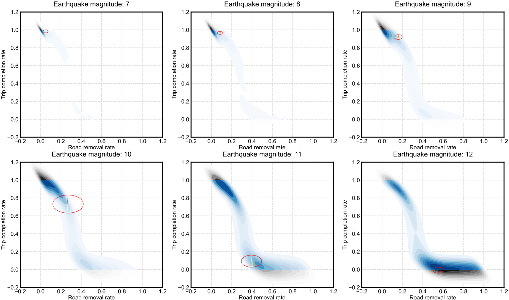
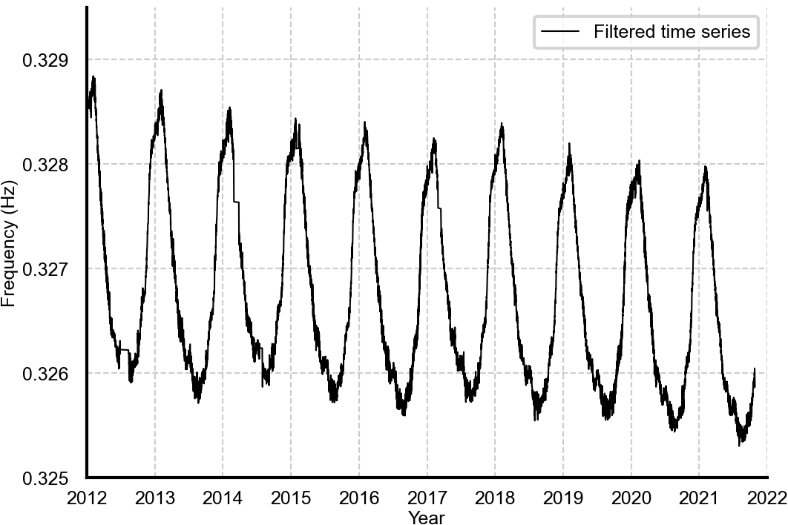
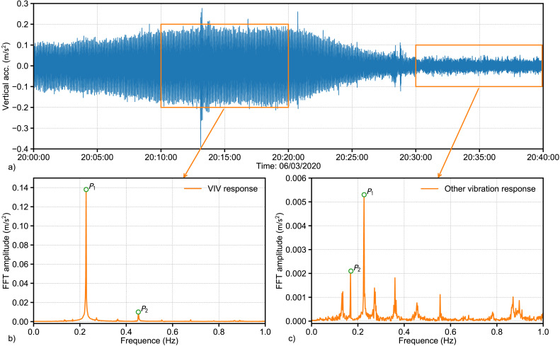
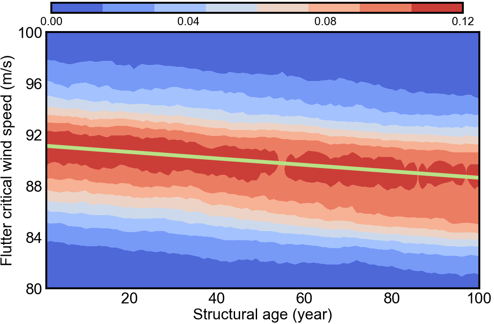
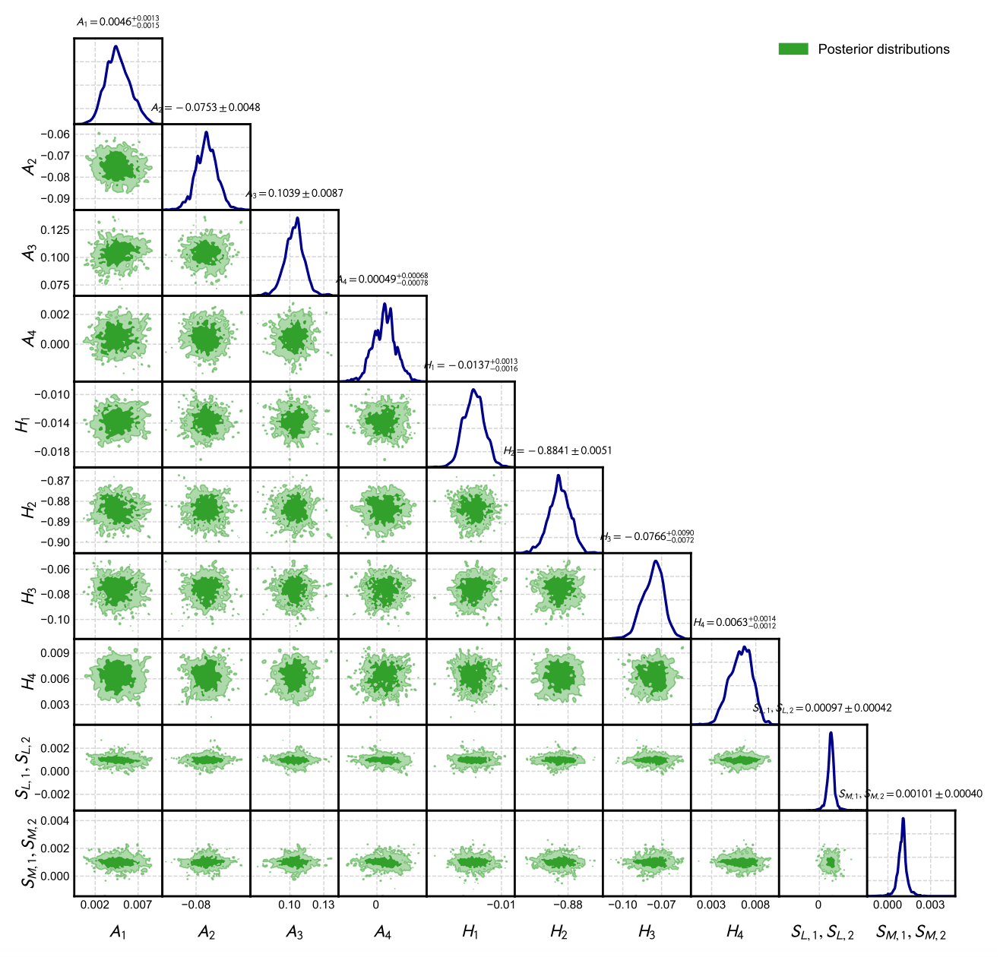
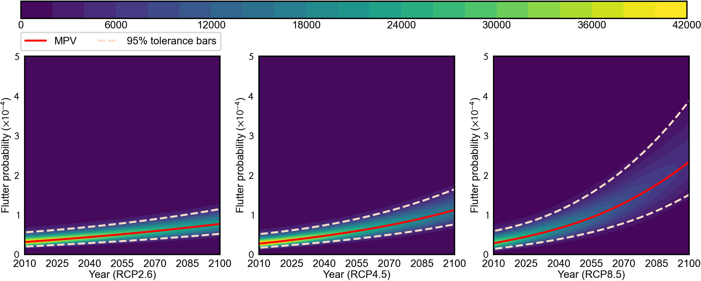

About Me
I am a fourth-year Ph.D. candidate at UC Berkeley, fortunate to work with Prof. Ziqi Wang. My research interests include LLM post-training (SFT, RLHF, RLVR), generative models (diffusion and flow matching), reinforcement learning, and graph learning. I also do research in statistical physics (mean-field theory, renormalization group) and uncertainty quantification. I am always open to research collaborations, especially on LLM and generative models. Please feel free to connect!
Before joining Berkeley, I received my master's degree (with honors) from Tongji University and my bachelor's degree (with honors) from Southwest Jiaotong University.
Research Interests
Large Language Models
Multimodal sentiment analysis; post-training (SFT, RLHF, RLVR)
Generative Models
Foundation models for natural hazard generation (ground motion, hurricanes)
Statistical Physics
Emotional phase transition; mean-field theory; renormalization group
Uncertainty Quantification
Sequential Monte Carlo; Hamiltonian Monte Carlo
Publications
-

RESSReliability Engineering & System Safety, Oct. 2024 -

SCHMStructural Control and Health Monitoring, Feb. 2023 -

ESEngineering Structures, Sep. 2022 -

JSEJournal of Structural Engineering, May 2022 -

MSSPMechanical Systems and Signal Processing, May 2022 -

JWEIAJournal of Wind Engineering and Industrial Aerodynamics, Aug. 2021
Awards & Honors
- May 2025 2nd Place, Objective Resilience Student Paper/Presentation Competition at EMI 2025, Anaheim, CA
- Aug 2024 Professor Alex & Georgia Scordelis Fellowship in Structural Engineering, UC Berkeley
- Oct 2022 Excellent Master's Thesis, Tongji University
- Jun 2022 Excellent Graduate, Tongji University
- Oct 2021 China National Scholarship
- Aug 2019 Citation for Outstanding College Graduate (Summa Cum Laude), China Civil Engineering Society
- Jun 2019 Excellent Undergraduate of Sichuan Province
- Jan 2019 1st International Engineering Mechanics Competition: 1st Prize (Individual) & 2nd Prize (Team)
- Apr 2018 ASCE Steel Bridge Competition: 5th Overall & Best Display Medal (Group Leader), Sacramento, CA
- Oct 2017 1st Prize, 9th Chinese Mathematics Competition (CMC)
- Jul 2017 1st Prize, 11th Zhou Peiyuan National Mechanics Competition
- Oct 2016 1st Prize, 8th Chinese Mathematics Competition (CMC)
- 2016–18 Railway Alumni Scholarship, Chengdu
Academic Services
Journal Reviewer
- Journal of Structural Engineering, ASCE
- Journal of Engineering
- Advanced Engineering Informatics
- Mechanical Systems and Signal Processing
- Engineering Structures
- Measurement
- Journal of Building Engineering
- Automation in Construction
- Reliability Engineering & System Safety
- Information Processing and Management
Professional Membership
- Student Member of ASCE (2016–present)
Visitor Map
Real-time visitor locations worldwide